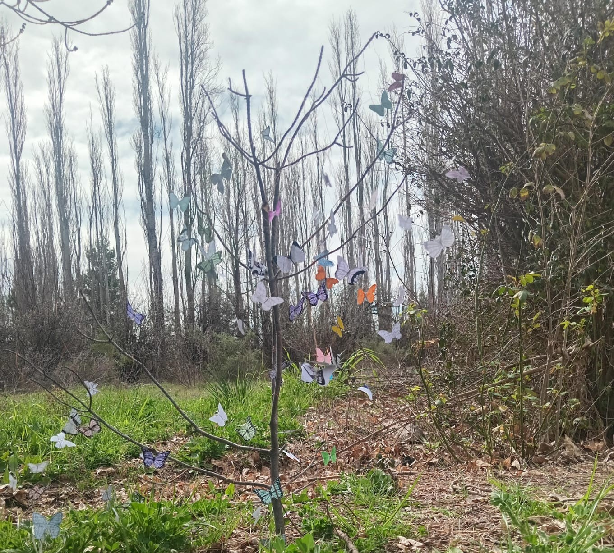

Con esta obra intentamos representar que la primavera ya se acerca y que todo a nuestro alrededor empieza a cambiar.

El árbol y las mariposas
Elegimos un árbol porque representa la vida y el crecimiento. En sus ramas colocamos mariposas de muchos colores para mostrar que la naturaleza comienza a llenarse de vida. Queremos transmitir que, con la llegada de la primavera, todo se vuelve más colorido, alegre y luminoso. Las mariposas representan los cambios y las cosas nuevas que están por llegar. También representan la libertad y la posibilidad de comenzar una nueva etapa.
Nuevas oportunidades
Para nosotros, la primavera no solo significa el cambio de estación, sino también nuevas oportunidades para todos. Así como el árbol vuelve a llenarse de vida, nosotros también podemos dejar atrás los momentos difíciles y empezar de nuevo.
Con esta obra queremos transmitir esperanza, alegría y que podemos aprovechar cada nueva oportunidad. Creemos que la llegada de la primavera nos recuerda que siempre podemos crecer, cambiar y volver a empezar. Por eso, las mariposas llenan el árbol de color y representan todas las cosas buenas que pueden llegar.